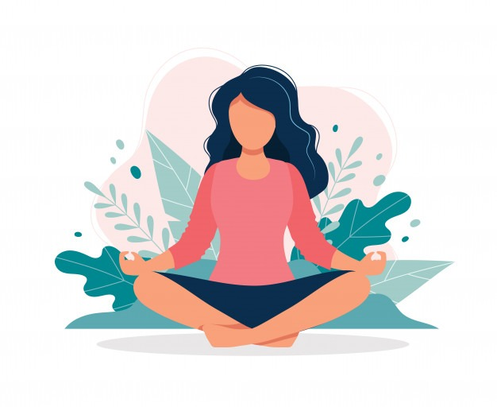
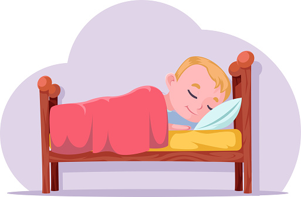

Kesehatan adalah aset berharga yang harus dijaga dengan baik. Menjaga kesehatan tubuh dan pikiran sangat penting untuk menjalani kehidupan yang berkualitas.Berbagai alasan membuktikan bahwa perlindungan dan penjagaan terhadap kedua aspek ini adalah strategi efektif untuk mengurangi risiko penyakit, mendorong keselarasan emosional, dan memperkuat kemampuan adaptasi.
Gambar:Makanan Sehat
Makan makanan sehat seperti sayuran, buah-buahan, dan protein tinggi dapat memberikan nutrisi yang dibutuhkan oleh tubuh.Pola makanan yang sehat tidak perlu menghilangkan makanan yang disukai atau makanan tertentu dari program diet, namun hanya perlu memilih opsi paling sehat dari setiap kategori.
Eyo...olahraga secara teratur dapat meningkatkan kondisi fisik dan mental.
Gambar: Meditasi
Meditasi dan yoga adalah cara yang efektif untuk menjaga keseimbangan emosional dan mengurangi stres.Meditasi adalah suatu praktik yang melibatkan fokus pikiran, relaksasi, dan kesadaran untuk mencapai keadaan mental yang tenang, nyaman, dan produktif. Terdapat beragam jenis meditasi, seperti Meditasi Kesadaran, Meditasi Spiritual, Meditasi Cinta Kasih, Meditasi Gerakan, dan lainnya.

Gambar: Istirahat
Tubuh membutuhkan istirahat yang cukup untuk pulih dan regenerasi.Tidur yang cukup harus didukung dengan pola hidup sehat, seperti mengurangi konsumsi kopi, rokok, dan alkohol, serta mencoba untuk membiarkan waktu tidur menjadi teratur.Pastikan Anda tidur minimal 7-8 jam setiap malam.
Mari kita Hidup Sehat!!.